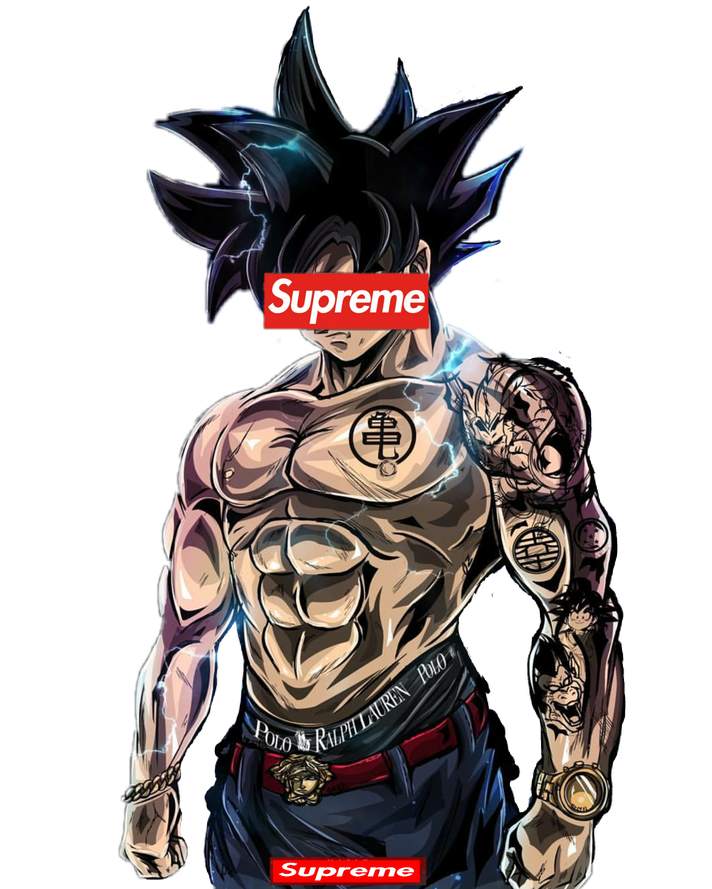
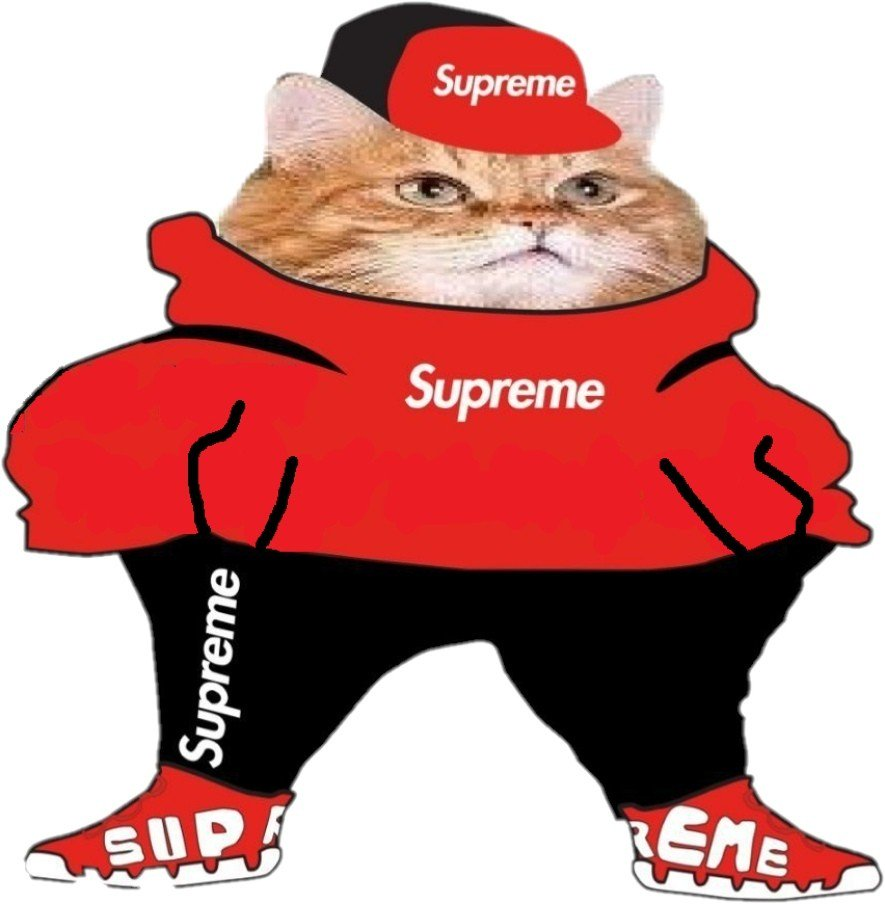
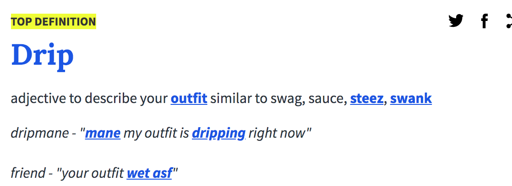

Что же такое DRIP?
Drip - это сленговый термин, используемый для восхваления стиля или одежды. Он стал использоваться в хип-хоп культуре и использовался как синоним с такими терминами, как « swag », становясь все более популярным, пока не нашел применение в нескольких иронических мемах
Как же появился этот термин?
Использование «DRIP» в хип-хопе восходит к середине 90-х - началу 2000-х годов. Сайт музыкальных аннотаций Genius отмечает, что песни "Pimp the Pen" Lil Keke (1996) и Ghostface Killah "Nutmeg" (2000) намекают на "Drip", но рэпер Sauce Walka утверждает, что он популяризировал это слово в настоящее время используется в его микстейпе 2014 года Saucemania. На треке "Flava In Ya Ear" он читает рэп: "Говорю тебе в ухо прямо здесь / Я знаю, ты слышишь меня, ублюдок / (я знаю, что ты меня слышишь) / Splash! Drip-drop!" В разговоре с Genius он говорит: «DRIP - значит быть королем. Капать - значит быть победителем». Рэпер Gunna также претендовал на создание "Drip".
Продвижение термина
Этот термин стал широко использоваться во второй половине 2010-х годов вместе с ростом популярности Migos. Migos Offset использует этот термин в припеве Bad and Boujee 2017 года, и в том же году группа записала еще один хит под названием «Ric Flair Drip» (см. справа). В 2018 году Cardi B выпустила «Drip» с участием Migos.
8 октября 2018 г. определение слова «Drip» было добавлено в Urban Dictionary пользователем splashtonkutcher (показано справа).
